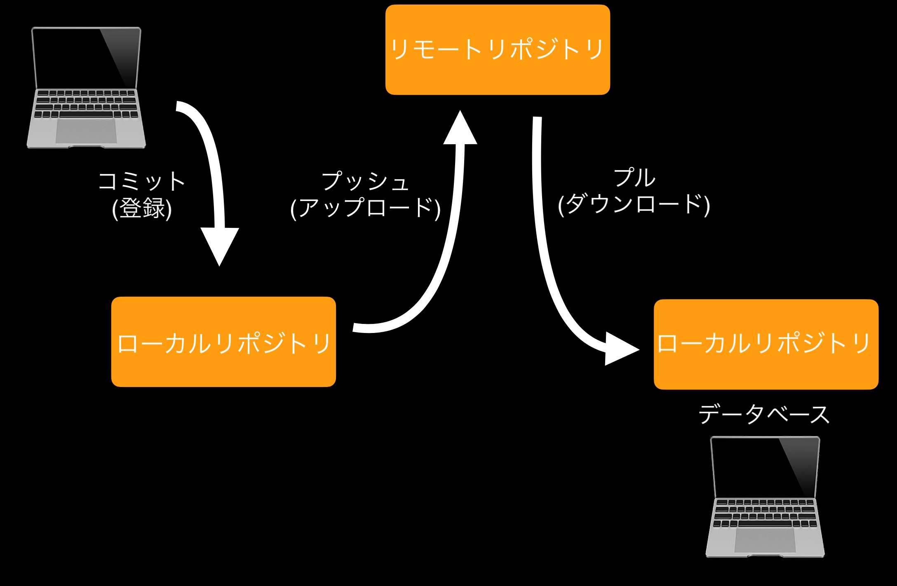

第1回
Assignment No.1
gitについて
gitとは？
あるデータを編集している際に、修正や更新を繰り返したことにより同じようなデータが増え、
どのデータを編集すれば良いのかわからなくなってしまうことがあります。
そのような問題を解決するために生まれたのがgitです。
gitとは代表的な分散型バージョン管理システムのことであり、ファイルのバージョンを管理しています。
gitを使用していれば、仮に上書きされた内容に不備があってもファイルのバージョンは管理されているため、
簡単に元へ戻すことができます。
要は、「変更履歴が残っているためいつでも任意のバージョンへ戻せる」ということです。
その他の利点は以下のことです。
変更履歴の共有が安易になる
共同開発を効率的に行える
gitを使う上での基本用語

※リポジトリ・・・ファイルや変更履歴を保存するデータベース
参考文献
（カゴヤのサーバー研究室 【入門】Gitとは？できることや使い方、GitHubとの違いをわかりやすく解説）
htmlについて
htmlとは？
htmlとは「ハイパー・テキスト・マークアップ・ランゲージ」の略であり、Webページを制作するためのマークアップ言語です。
「タグ・要素・属性」の3つで構成されており、それぞれに役割があります。
Webページの見た目は基本的に、htmlとCSS（色や文字サイズなどの装飾を設定する言語）によって作られています。
※マークアップ言語とは、テキスト情報の構成（タイトル・段落など）や役割をコンピュータが構造的に理解できるようにするための言語を意味します。
タグ
htmlの記述に意味を与える印のこと
要素
Webページを構成するテキスト情報のかたまりを指す
属性
個々のタグに特定の性質や動作を与える記述のこと
参考文献
(HTMLとは？初心者向けに基礎知識を分かりやすく解説)